TD 1 - MLOps
Prerequisites
Make sure you have the following commands working on your workstation:
- conda
- docker
- docker compose
1. Docker quick start
a. Your first Docker commands

Before starting, make sure your command line has docker and docker-compose working.
Exercise - Your first Docker commands
- List the available docker commands by running
docker. - Run the
docker imagescommand. This should list all your existing Docker images you can use. Do you have any?- Compare them with the images in your
Docker Desktopwindow.
- Compare them with the images in your
- Run the
docker ps -acommand. Do you see any previously running containers?- The
pscommand stands forprocess, you can imagine this like a running container. The-aflag stands for all containers, not only running ones. You should see containers that were stopped earlier.
- The
We want to test the new walrus operator in Python 3.12. You can download any Docker image from the Docker Hub.
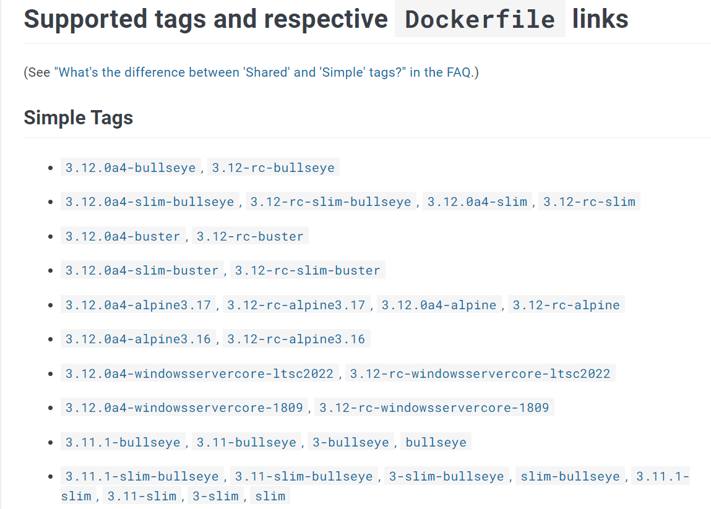
To run a Docker image, you'll need to specify its name and tag as <label>:<tag>. Let's run some code in the python:3.12-slim image, as you can guess a small image with Python 3.12 installed.
Exercise - Run your first container
- Find the command to download the
python:3.12-slimimage in your set of available images.- Check the image is available with
docker images
- Check the image is available with
- Run a container from the image with
docker run -it --rm python:3.12-slim.- The
-itflag is shorthand for-i -t, short for interactive and tty. This opens a tty terminal to your container. - The
--rmflag tells the Docker Daemon to clean up the container after exiting.
- The
- By default the
runfor the image will put you in a Python shell. Try to run some Python code and play with the walrus operator.- Docker gives you an easy way to test new Python versions without installing it on your system.
- Exit the container by typing
exit()in the command. - Make sure the container has disappeared with
docker ps -a. - Run the docker run command again without the
--rmflag.- Run
docker run -it --name test python:3.12-slimand then exit the container. What displays this time indocker ps -a?
- Run
- Since we gave a name to our container, let's restart it with
docker start test. You can then reattach to it withdocker attach test. - We had enough fun with that container, destroy it by using the
docker rmcommand. - Let's clean up our images a little bit, delete the
python:3.12-slimimage with thedocker rmicommand.
Most modern libraries have a dedicated Docker image maintained by the community. Do not hesitate to browse the Docker Hub to test the latest systems.
What if you want to use a Python image but don't want to use its Python shell?
Exercise - Changing the CMD of the image
- In an Anaconda prompt, run
python -m http.server 9999. In a browser, connect to http://localhost:9999.- What is the
http.serverprogram in Python? - Close it with
CTRL + C.
- What is the
- Let's run this command in a Docker container! Run
docker run -it --rm -p 9999:9999 python:3.12-slim python -m http.server 9999. connect to http://localhost:9999 in your browser. - What is the
-p 9999:9999flag? - How do you connect to the http server if you run the command with
-p 7777:9999instead?
This way we now can download an image, run it with a custom command and expose some of the ports to us.
Challenge
- In a folder with some Python notebooks you copied from some other projects you want to use, run the following command:
docker run -v <current directory>:/tmp/working -w=/tmp/working --rm -it -p 8888:8888 kaggle/python jupyter notebook --no-browser --ip=0.0.0.0 --allow-root --NotebookApp.token="" --notebook-dir=/tmp/working.- The
<current directory>should be replaced by%cd%in Windows Command line,${PWD}in Powershell and$(pwd)in WSL2. - This is the notebook that is used by Kaggle notebooks, with all the necessary Data Science packages to work on your projects! But it is very big, it might takes several minutes to download.
- Carefully read each part of the command and prepare to be able to explain each part to me.
- The only flag you currently don't know is
-v. It mounts one of your local folders to a folder inside the running container, so that you can see your local Jupyter notebooks from inside the containers. You can edit a file in the Jupyter notebook and see the changes locally (though I don't recommend doing it like this because of line separator risks).
- The
b. Your first Dockerfile
Our goal is to create our own Docker image, using a Dockerfile.
Exercise - Folder architecture
- Put yourself in a brand new folder, like
mlops-td. - In this
mlops-tdfolder, create a new folder, name it however you like. For exampletd. - Create the following empty files:
td
├── app.py <- A python script
├── requirements.txt <- Python packages (feel free to install packages you like)
└── Dockerfile <- Has the Docker commands to build our custom image
- Write some Python code in
app.py. PrintingHello Worldis good enough.
Exercise - Dockerfile
- Open the
Dockerfilefile with your favorite editor (I would recommend opening themlops-tdfolder with VSCode). - Write down the following lines into
Dockerfile:
FROM python:3.12-slim
COPY requirements.txt /app/requirements.txt
WORKDIR /app
RUN pip install -r requirements.txt
COPY app.py app.py
CMD ["python", "app.py"]
Explaining the Dockerfile commands
FROMspecifies the parent image linkCOPYcopies files or directories from the folder you ran docker from, into the image (at the current selectedWORKDIR). linkWORKDIRputs the image location to the desired folder. In this example, all future commands will be run inside the/appfolder, like if you did acd /app. linkRUNruns a classic UNIX command. Use them to install stuff. linkCMDdefines the command the Docker image will run by default. link
- To run the building of the image, run
docker build -t td:0.1 ./- the
-tis the name (td) and tag (0.1) of the image. - the
./specifies the current folder which contains theDockerfileto build. If you're not in the folder, point to the path accordingly.
- the
- Make sure the new
td:0.1image was created. What is the size of the image? - Run your new image and verify the code from your
app.pyscript runs correctly. - Try to add dependencies in the
requirements.txtfile. When you rerun the samebuildcommand, do you notice something in the print output?- You should see
---> Using cacheappear in particular places, telling you it didn't start the build from scratch.
- You should see
Challenge
- Create a Docker image which contains a copy of any of your Jupyter notebooks and installs the
jupyterlabdependency. When the container runs, a Jupyter lab server should run. I should be able to access every notebook at the root. - Mount a folder with Jupyter notebooks into a volume using the
-v <current directory>:/tmp/workingflag. Check any edit you do on a notebook in the container is stored on your disk.- The
<current directory>should be replaced by%cd%in Windows Command line,${PWD}in Powershell and$(pwd)in WSL2.
- The
2. Running multiple microservices together with docker compose
With docker-compose, you are able to run a group of containers altogether. In this tutorial, we will setup a 3-tier architecture with Docker compose, by running a Docker container for each tier.
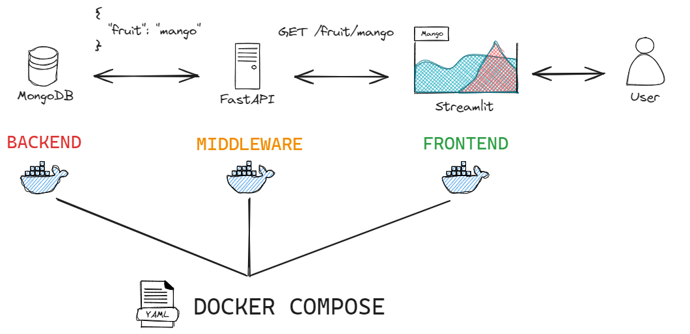
a. Developing the FastAPI API locally
Exercise - Architecture
- In the
mlops-tdfolder, build the following folder architecturemlops-td ├── client | ├── app.py <- Streamlit/Gradio/Panel/Dash/Shiny to request a REST API | ├── requirements.txt <- Python packages | └── Dockerfile <- Commands to build our custom image | ├── server | ├── app.py <- FastAPI to expose a REST API that will write to MongoDB | ├── requirements.txt <- Python packages | └── Dockerfile <- Commands to build our custom image | ├── td <- Contains your previous exercise | └── docker-compose.yml
Prerequisites - Install Python dependencies in a local Conda environment
- In a new
Anaconda Prompt, create a new conda environment (call itmlopsif you want) - Activate the created environment
- In this environment, install
fastapi,streamlit,uvicornandpymongo:pip install fastapi streamlit uvicorn pymongo - Check that both
dockerandcondacan be used from your command line.
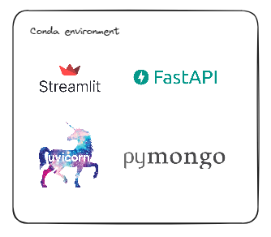
Exercise - Build a Python REST API with FastAPI (a Flask alternative)
- In
server/app.py, create a REST API with FastAPI so that:- when you run
uvicorn --reload --host 0.0.0.0 app:applocally, from theserverfolder, you can connect to http://localhost:8000 and get back{"message": "Hello World"}. - when you connect to http://localhost:8000/docs, you can access the documentation page of your API like in the image below.
- when you run
Refer to the Quick Start to discover how to implement the API.
You should have the documentation of your FastAPI server running locally on http://localhost:8000/docs.
You can test any part of the API by clicking on the Try it out button on the top right of each resource:
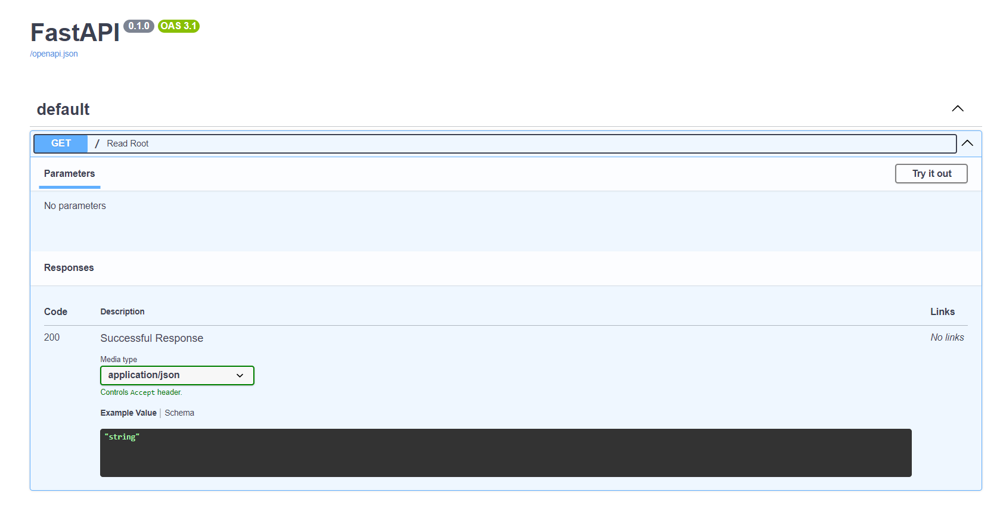
b. Building the FastAPI Docker image
Exercise - Run the FastAPI API in a Docker container
- In
server/Dockerfile, install the dependencies from the local Conda environment. - In
server/Dockerfile, run the command that runs the Uvicorn server throughCMD. Use theDockerfilefrom the previous part as template.- Do note that
"cmd --reload -h 127.0.0.1 app"and ["cmd","--reload","-h","127.0.0.1","app"] are the same.
- Do note that
- Build your image. Give it a label like
mlops-server. Make sure if you run the container with the correct port exposed, you can connect to the API from the browser on http://localhost:8000 and get yourHello world.
Solution ONLY if you feel stuck
Are you really stuck  ?? Give it one last try
?? Give it one last try 
Build with docker build -t mlops-server . . Run with docker run -p 8000:8000 --rm mlops-server.

c. Connecting the FastAPI Docker container to a Mongo container
We are going to add a MongoDB database next to our API, which is used to store JSON objects.
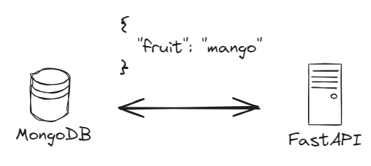
Exercise - Run Mongodb in Docker, FastAPI locally
- Run a MongoDB container using the
docker runcommand. - Let's add some code into
server/app.pyto push data into MongoDB. Here's code to push and retrieve a Python Dict into a running local MongoDB.
from pymongo import MongoClient
client = MongoClient('localhost', 27017)
db = client.test_database
collection = db.test_collection
def add_list_fruits(fruit):
id = collection.insert_one({"fruit": fruit}).inserted_id
return list(collection.find({}, {"_id": False}))
- Create a new
GETmethod so that if you connect to/add/mangoit adds{fruit: mango}to mongodb, and anotherGETmethod/listthat returns all fruits in MongoDB.- Use the Path params doc to get started
- Run your FastAPI server locally. From http://localhost:8000/docs, you can try out the API examples and check that data is returned correctly.
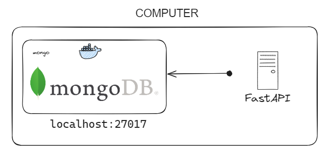
Solution ONLY if you feel stuck
Are you really stuck ?? Give it one last try
Run MongoDB with docker run -it --rm --name some-mongo -p 27017:27017 mongo:4.
My server/app.py content:
from fastapi import FastAPI
from pymongo import MongoClient
app = FastAPI()
client = MongoClient('localhost', 27017)
db = client.test_database
collection = db.test_collection
@app.get("/")
async def root():
return {"message": "Hello World"}
@app.get("/add/{fruit}")
async def add_fruit(fruit: str):
id = collection.insert_one({"fruit": fruit}).inserted_id
return {"id": str(id)}
@app.get("/list")
async def list_fruits():
return {"results": list(collection.find({}, {"_id": False}))}
Exercise - Run Mongodb and FastAPI in separate Docker containers
- Add the following code in
docker-compose.yml. This will start a Mongodb next to your server image:
version: '3'
services:
mongo:
image: mongo
server:
image: mlops-server
build:
context: ./server
dockerfile: Dockerfile
ports:
- 8000:8000
- Run the cluster with
docker-compose up, from the root folder (wheredocker-compose.ymlis).- BEWARE! only works if your
mlops-serverimage has already been built - Check that you have indeed 2 containers running.
- BEWARE! only works if your
- Close the cluster with
CTRL+C, and destroy it withdocker-compose down. Adocker ps -ashould show no containers remaining. - In
server/app.py, changeclient = MongoClient('localhost', 27017)intoclient = MongoClient('mongo', 27017).- It is docker-compose that redirects the
mongoURL/service into themongocontainer.
- It is docker-compose that redirects the
- Because the image building info is in
docker-compose.yml, you can rebuild the images immediately withdocker-compose up --buildinstead. Try it out. - Connect to your API with http://localhost:8000/docs running in a container. Make sure you can still add and get objects from MongoDB through the API.
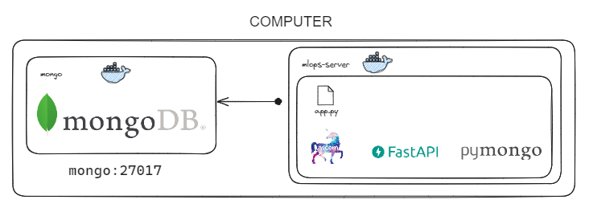
d. Adding the User Interface layer with Streamlit
Instead of connecting to the FastAPI documentation page to interact with it, let's create a simple Streamlit UI to interact with the API.
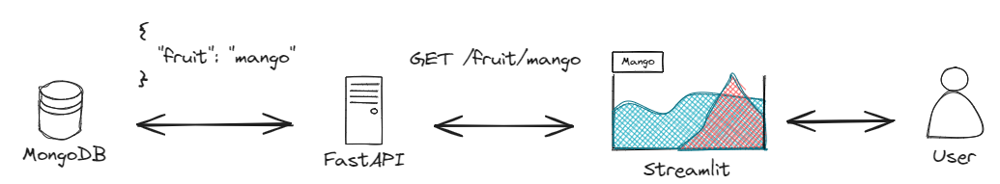
Building a Streamlit UI connected to the API
- Make sure your docker-compose FastAPI + MongoDB cluster from the previous section is running.
- Build a local Streamlit (or Gradio or Dash or Shiny or whatever) app in
client/app.pywith a text input to write down a fruit and a button to request thehttp://server:8000/add/<fruit>.- The command to run a Streamlit app from your conda environment is
streamlit run app.py - Here is some code to put in
client/app.pyto react to a button click:
- The command to run a Streamlit app from your conda environment is
import streamlit as st
st.title("My beautiful App")
button_clicked = st.button("Click me")
if button_clicked:
st.write("It worked")
st.balloons()
- Get back the list of all fruits currently in Mongo from the API by hitting http://localhost:8000/list on clicking from another button.
Challenge - Building our first Dockerized Fullstack web service
- Implement
client/Dockerfile, build it asmlops-client. Make sure you can properly run it withoutdocker compose - Add the Streamlit UI container run to
docker-compose.yml.- Don't forget to change the URL of your
MongoClient
- Don't forget to change the URL of your
- Restart your
docker-composecluster.- If all is well, in your 3-tier architecture, Streamlit is only hitting FastAPI and only FastAPI is hitting MongoDB.
- That way you can add authentication or security measures at FastAPI level, which would be harder to do if the client immediately hit MongoDB.
3. A full-stack Dockerized ML project
Pick up a classification training dataset, like Iris or Penguins. The goal is to build a fully functional docker-compose app that provides an UI to do predictions on a pretrained ML model.

Challenge
- Create a
server/train.pyscript, that trains a scikit-learn model over the Iris or any other classification dataset (as long as it doesn't have too many features). When you run it locally withpython train.py, it should create amodel.pklfile (as pickle or using joblib). This pickled model should then later be copied into the FastAPI Docker image. - The client should be a Streamlit (or Gradio or Dash or Shiny or whatever), exposing all feature columns of the dataset we want to use to make a prediction.
- The server should be a FastAPI API, which exposes a POST verb
predict. If you sendPOST /predictwith a body containing the values of the features, like{"sepal_length": 42, "petal_length": 34...}it should return the predicted class from a pretrained model. Following is an example of reacting to a POST request in FastAPI:
from fastapi import FastAPI
from fastapi.encoders import jsonable_encoder
from pydantic import BaseModel
class Item(BaseModel):
sepal_length: float
sepal_width: float
petal_length: float
petal_width: float
app = FastAPI()
@app.post("/predict")
def predict(item: Item):
item_data = jsonable_encoder(item)
return item_data
- The client should request the
http://server:8000/predictwith the features in the body to get back a class to display. - Add a
README.mdto your project to describe how to clone & run the project.- Normally, I should just need a
docker compose up --buildto build and run the Docker image.
- Normally, I should just need a
Good Luck, Have Fun  !
!
===== Bonus Challenges =====
The following exercises are optional bonuses if you want to go the full MLOps route.
You can do them in any order.
4. Github & CI/CD
We can push the MLOps images to a Github project so anyone can download them.
a. Create a Github repository for your MLOps project
Exercise - Create a new Github repo
- Create a new
mlopsrepo with aREADME.mdon your Github profile (or any random file).- You should see a new
Packagesin the bottom right of the project - If you can't see it, head to the
Settingsgear icon next to theAboutsection and check thePackagesoption.
- You should see a new
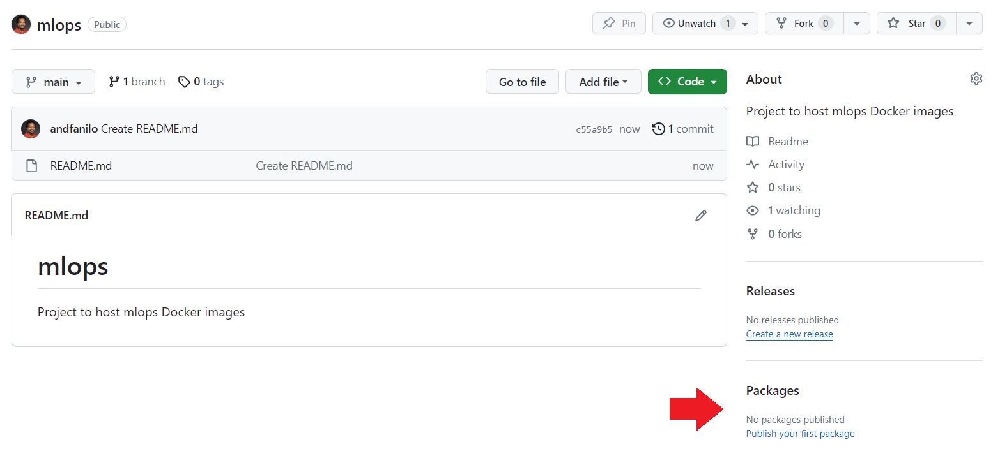
- Click on the
Publish your first packageoption. We will be using theContainersoption.
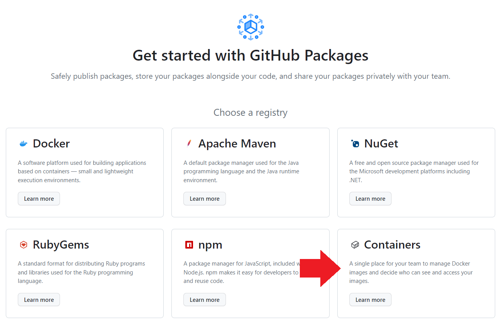
- Can you find the pricing for the Containers service?
b. Authenticating to Github using a personal access token
To upload an image to the Github Packages, you will need to authenticate from Command line using a personal access token (classic) before you can push Docker images to the Github project.
Personal Access Token are secrets
A personal access token is different than your Github password, and while you can revoke them if you leak them online, treat them with the same importance as a password so handle it with care.
Exercise - Create a personal access token
-
Follow all instructions in this tutorial.
- Scope of the token should have at least write:packages and delete:packages
- Copy your token in a safe space, you'll have to copy it in the command line when required.
- Careful, anyone who gets this personal access token can access any of your public/private repositories, handle with care.
-
In the following image, I have 2 personal token with different access properties. I can delete any whenever I want 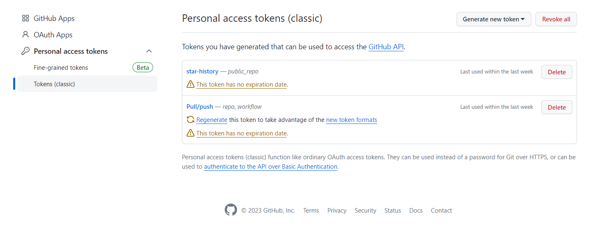
c. Push a Docker image to the Github project
To push a Docker image to Github, it needs to follow the following name convention: ghcr.io/NAMESPACE/IMAGE_NAME:latest. You will need to rename your images.
For example, I would need to rename my image to ghcr.io/andfanilo/mlops:latest, because
andfanilois my profile name, so it's theNAMESPACEmlopsis the name of my repo, so it'sIMAGE_NAMElatestis the default tag. You can put any tag likev0.1but stick tolatestfor now.
The following exercise involves the git command, make sure you use git bash or install git in a conda environment.
Exercise - Pushing an image to Github
- Run
docker images
REPOSITORY TAG IMAGE ID CREATED SIZE
mlops-client latest 855e076c7e32 6 days ago 583MB
mlops-server latest efac786ed274 6 days ago 464MB
mongo latest 021b676f1558 3 weeks ago 757MB
Github Packages free tier
If you remember from the pricing page you are limited to a monthly:
- 500Mb of Packages storage
- 1 Gb of transfer out
Our docker images are 500Mb, way too large for the current free tier. There are ways to reduce the image size, but honestly we won't be able to squeeze our Streamlit/FastAPI images to 500Mb, even if the price for hosting is actally pretty low. Let's use a very small image to train for now.
- Pull the docker
hello-worldimage, check out its size is around 10Kb.
$ docker images
REPOSITORY TAG IMAGE ID CREATED SIZE
mlops-client latest 855e076c7e32 6 days ago 583MB
mlops-server latest efac786ed274 6 days ago 464MB
mongo latest 021b676f1558 3 weeks ago 757MB
hello-world latest 9c7a54a9a43c 7 months ago 13.3kB
- Rename the
hello-worldimage to comply with the Github Packages URL:docker image tag hello-world:latest ghcr.io/your-name/mlops:latest
$ docker images
REPOSITORY TAG IMAGE ID CREATED SIZE
mlops-client latest 4f17fd22a93b 16 minutes ago 488MB
mlops-server latest efac786ed274 6 days ago 464MB
mongo latest 021b676f1558 3 weeks ago 757MB
hello-world latest 9c7a54a9a43c 7 months ago 13.3kB
ghcr.io/andfanilo/mlops latest 9c7a54a9a43c 7 months ago 13.3kB
- Try to push the
ghcr.io/your-name/mlops:latestimage to Github:docker push ghcr.io/your-name/mlops:latest
$ docker push ghcr.io/andfanilo/mlops:latest
The push refers to repository [ghcr.io/andfanilo/mlops]
01bb4fce3eb1: Preparing
unauthorized: unauthenticated: User cannot be authenticated with the token provided.
- To authenticate with your personal access token in place of password:
docker login ghcr.io -u GITHUB_USERNAME- Take note that when you enter letters or paste in the
Password:field, no stars will appear to show a character count. This is normal, proceed.
- Take note that when you enter letters or paste in the
$ docker login ghcr.io -u andfanilo
Password:
WARNING! Your password will be stored unencrypted in /home/docker/.docker/config.json.
Configure a credential helper to remove this warning. See
https://docs.docker.com/engine/reference/commandline/login/#credentials-store
Login Succeeded
- Try to push again
$ docker push ghcr.io/andfanilo/mlops:latest
The push refers to repository [ghcr.io/andfanilo/mlops]
01bb4fce3eb1: Pushed
latest: digest: sha256:7e9b6e7ba2842c91cf49f3e214d04a7a496f8214356f41d81a6e6dcad11f11e3 size: 525
- Though the Docker image has been pushed to you Github project, it is still private and invisible. You can find it on your profile page: https://github.com/your-profile?tab=packages. Connect it to your
mlopsrepository through this tutorial. A Docker package should finally appear on your repository.
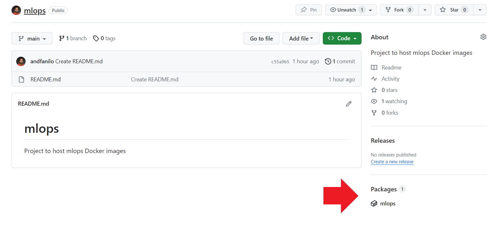
- Ask a friend to download your image!
There are other Docker registries to push images to, like Docker Hub (which has a better free tier), Gitlab and Quay.io. Every Cloud Provider (AWS/Azure/GCP) also have their dedicated container registry per project, you'll be expected to push images there in customer projects.
d. Continuous integration with Github Actions
CI/CD is an acronym that stands for Continuous Integration (CI) and Continuous Deployment or Continuous Delivery (CD). It's a methodology that modern software development teams use to deliver code changes more frequently and reliably.
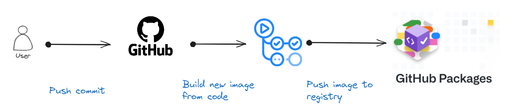
- CI: Each code change triggers an automated build and testing sequence. Any time to push commits to Github, a new Docker image with the changes should be built and stored in Github Packages
- CD: After building a new image, automatically deploy every change that passes the build and test stages to a production environment
In our MLOps tutorial, CI/CD refers to the continuous integration and delivery of up-to-date Machine Learning APIs.
Exercise - Github Actions quick start
Run through the Github Actions quick start on your mlops Github project: https://docs.github.com/en/actions/quickstart
Challenge - Rebuild the hello-world image at every commit
- Create a new Dockerfile in the
mlopsproject. This Dockerfile should use thehello-worldbase image but change theCMDto print something (like an environment variable) - Edit the
.github/workgflows/github-actions-demo.yml(or however you named it) to build the new image and push it to the project's container registry automatically at every commit push. - Push a new commit, wait for the image build, then redownload the Docker image locally an try running it.
You are now able to host up-to-date images on Github.
5. Deploying to Huggingface Spaces
The Hugging Face Hub is a platform with over 350k models, 75k datasets, and 150k demo apps (Spaces), all open source and publicly available, in an online platform where people can easily collaborate and build ML together. The Hub works as a central place where anyone can explore, experiment, collaborate, and build technology with Machine Learning.
Hugging Face Spaces offer a simple way to host ML demo apps directly on your profile or your organization’s profile. It's the perfect platform to deploy small ML apps in Streamlit, Gradio or Docker. All CI/CD is preconfigured on Huggingface Spaces, any code change you push will automatically rebuild and redeploy the app online.
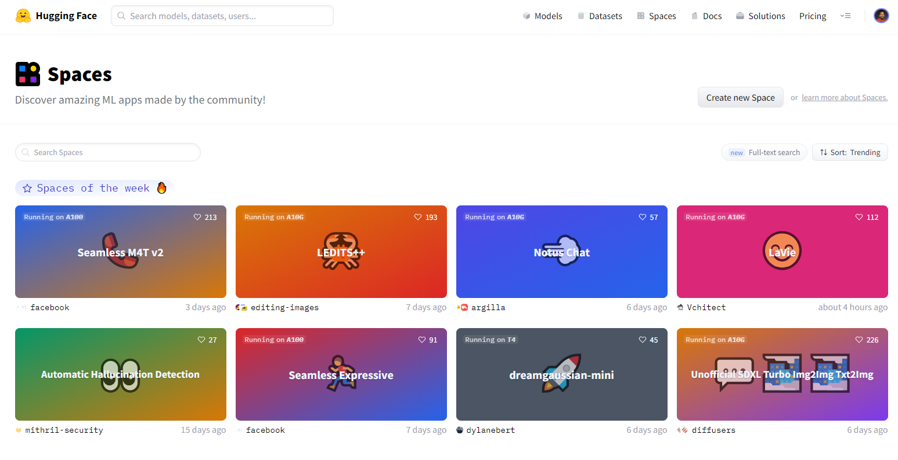
Challenge - Deploy a Docker image on Huggingface Spaces
- Create an account on HuggingFace
- Follow the Docker Spaces quick start: https://huggingface.co/docs/hub/spaces-sdks-docker-first-demo
- Create a new project for your
mlops-serverFastAPI part and deploy it on Huggingface Spaces. Your local Streamlit app should be able to use it for predictions.
6. Enhancing the Docker Compose for Continuous Deployment
We can use a MLOps platform to:
- track training experiments
- store and evaluate models in a registry for reuse
- package models into APIs and Docker images
Popular platforms are MLFlow, Neptune and Weights & Biases.
a. Adding MLFlow
Using the ghcr.io/mlflow/mlflow Docker image, you can start a MLFlow Model Registry, and send Scikit-Learn models there with associated metrics.
For example if you start a MLFlow Server with docker run -it --rm -p 5000:5000 ghcr.io/mlflow/mlflow mlflow server -h 0.0.0.0 --backend-store-uri sqlite:///mydb.sqlite, you can use the following code to train a model and push it to the MLFlow Server with its evaluation metrics:
import numpy as np
from sklearn.metrics import mean_squared_error, mean_absolute_error, r2_score
import mlflow
import mlflow.sklearn
def eval_metrics(actual, pred):
rmse = np.sqrt(mean_squared_error(actual, pred))
mae = mean_absolute_error(actual, pred)
r2 = r2_score(actual, pred)
return rmse, mae, r2
with mlflow.start_run():
lr = ElasticNet(alpha=alpha, l1_ratio=l1_ratio, random_state=42)
lr.fit(train_x, train_y)
predicted_qualities = lr.predict(test_x)
(rmse, mae, r2) = eval_metrics(test_y, predicted_qualities)
# send to MLFlow
mlflow.log_param("alpha", alpha)
mlflow.log_param("l1_ratio", l1_ratio)
mlflow.log_metric("rmse", rmse)
mlflow.log_metric("r2", r2)
mlflow.log_metric("mae", mae)
mlflow.sklearn.log_model(lr, "model", registered_model_name="ElasticnetWineModel")
You should be able to visualize you model on the dashboard http://localhost:5000.
Challenge
- Use the previous challenge as template to create the above architecture, adding a MLFlow service in
docker-compose. You now have aclientStreamlit,FastAPIserver andMLFlowbackend. - Locally, in the
train.pythat trains your ML Model, log your model into MLFlow. - In your
FastAPIserver, load the model from MLFlow - Add an API endpoint like
GET /update-modelthat loads a new model from MLFlow. - From the client, add a button to update a model.
You can now decide to update models from the client, or detect data drift by storing the latest instances server side/in a database and using whylabs to detect a drift and train a new model.
b. Adding Prefect
Instead of running train.py to retrain a model on demand, you can schedule the run using Prefect, Dagster or Airflow
Challenge
- Locally, use Prefect to schedule a
train.pyrun every 5 minutes.- Visualize all runs in their respective UIs.
- Build a Docker image which will contain your Prefect/Airflow and add it to
docker-compose.yml. In the end you should have the following architecture
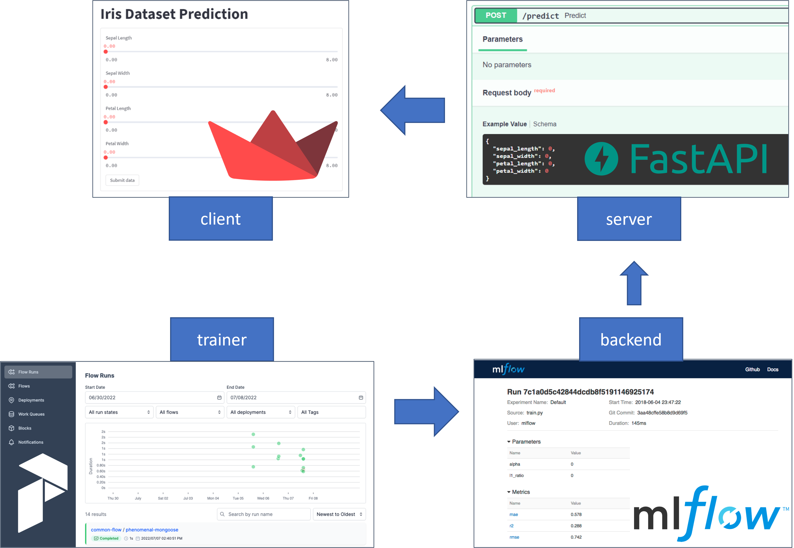